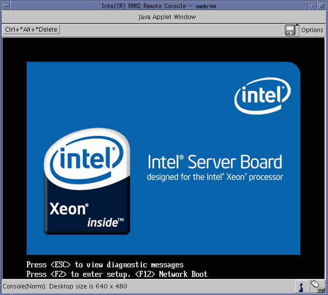

Operating Documentation
Direction 5307452-8EN, Rev# 4
Discovery CT750 HD Service Methods - Adv
Operating Documentation |
| Required Persons | Preliminary Reqs | Procedure | Finalization |
|---|---|---|---|
| 1 | Timing Not Applicable | Minutes TBD | Minutes TBD |
The following procedure describes and illustrates the BIOS CMOS settings for the VeRB Computer.
| NOTE: | Only those settings that are altered from the installed BIOS defaults settings are listed in the procedure. The procedure first restores default values. Select settings are then changed to meet specific needs for the hardware application. |
VeRB Motherboard BIOS Revision: S5000.86B.10.00.0084.101720071530
| Last Revised: | 5 August 2008 |
| Condition | Reference | Eff |
|---|---|---|
The CT System hardware must be in good working order. | - | - |
Only trained service personnel should service the GE CT Scanner. | - | - |
Shut down Applications from the Common Service Desktop, Utilities Tab.
Open a Terminal Window, and log on as root:
Type: {ctuser@hostname}su- [ENTER]
Type the root password and press [ENTER]
Launch the Mozilla WEB browser:
Type:{root@hostname}mozilla [ENTER]
Select default profile
Select Start Mozilla
| NOTE: | Steps b & c will only appear if the Mozilla Browser default profile has been altered and saved. |
Illustration 1: Mozilla Web Browser

Follow instruction listed in the following section for setting the VeRB Computer Motherboard BIOS Settings.
1. In the WEB Browser URL Address Bar:
Type: verbrmm [ENTER]
2. The WEB Browser will update and display the Login page for the VeRB RMM.
Username Type:admin [TAB]
Password Type: password [ENTER]
Illustration 2: VeRB RMM Login Page

3. The WEB Browser will update and display the Home page for the VeRB RMM.
Illustration 3: VeRB RMM Home Page

4. Click on Console icon or Click to Open in the Remote Console Preview window on the RMM Home Page to open a Remote Console.
| NOTE: | The Remote Console is a redirected display of the VeRB Computer. It will appear blank when first accessed. The Remote Console will act much like a KVM Switch, virtually using the Host Computer’s Monitor, Keyboard and Mouse |
Reset the VeRB Computer by pressing the [RESET] button on the VeRB Computer front panel. This will cause the VeRB Computer to reboot, but does not reset the RMM. Shortly there after, the Boot Screen of the VeRB Computer should be displayed in the Remote Console window.
6. Press [F2] on the keyboard when instructed, to enter the VeRB Computer’s Motherboard BIOS setting routine. See Step BIOS Setup Flash Screen
| NOTE: | Multiple [F2] presses may be needed to enter BIOS Setup. |
Illustration 4: BIOS Setup Flash Screen

Press [F9] and click YES to load Optimized Defaults (BIOS Default Settings).
Select the [Main] tab.
Use +/- keys to change defaults, see on-screen menu keys for additional help.
Set Post Error Pause setting to [DISABLED] .
Hit [Esc] to return to the top level of BIOS Setup.
Navigate to the [Advanced] tab.
Set System Acoustic and Performance Configuration > Throttling Mode to [CLOSED LOOP] .
Hit [Esc] to return to the top level of BIOS Setup.
Set PCI Configuration > Dual Monitor Video to [ENABLED] .
Set PCI Configuration > OnBoard NIC2 ROM to [DISABLED] .
Hit [Esc] to return to the top level of BIOS Setup.
Navigate to the [BOOT OPTIONS] tab.
Set the boot order settings as follows:
1. IBA GE Slot 400
2. Intel RMM2 Vdrive
3. EFI shell
4. N/A
5. N/A
Press the [F10] and [YES] to save settings and exit.
The VeRB Computer will reboot.
After completing the BIOS Settings Procedure, the VeRB Computer will reboot. Verify that the VeRB Computer has powered up and is not displaying or sounding any POST Errors.
| NOTE: | See VeRB Troubleshooting if any Post Errors appear. |
Close Mozilla Browser and reboot the system by typing:
Type: [root@hostname]reboot [ENTER]
In order to assure proper operation of the VeRB computer it is necessary to perform System Configuration found in the Align_Setup_Cals chapter of the manual.
| NOTE: | No changes are required in the System, Preferences, Hardware, and Network settings. The procedure just needs to be executed in order for the automated scripts to run. During the re-configuration process the DHCP Server running on the Host Computer is reconfigured to support the new VeRB Computer Ethernet MAC addresses |
| NOTE: | Until the System Configuration Procedure is performed, the Linux OS bootup text will display an error message when the VeRB computer attempts to mount its NFS on the Host Computer. Ignore the error message. |
Go to Functional Checks in this manual and perform System Scanning Test to confirm proper operation.